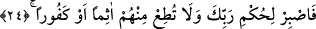

vurgulayarak diyorum ki bu Kur’an bir vahiydir, haktır. Benim katımdan indirilmedir. O
hâlde sen onların kınamalarına aldırma. Çünkü sen doğru ve doğrulanmış hak
peygambersin.”
24. Artık Rabbinin hükmüne (boyun eğip) sabret; onlardan hiçbir günahkâra,
yahut hiçbir nanköre boyun eğme.
“Artık Rabbinin” kâfirlere karşı sana yardım etmeyi geciktirme konusundaki
“hükmüne sabret.” Çünkü güzel âkıbet O’na âiddir. Kâfirlere mukabelede bulunmak ve
onlardan intikam almak husûsunda acele etme. Çünkü bütün işler, kendileri için
belirlenmiş hususi vakitlere bağlıdır ve her gelecek yakındır.
“Onlardan” kâfirlerden “hiçbir günahkâra veya nanköre itâat etme.” Âyet-i
kerîmede “günahkâr” anlamına gelen “âsim” kelimesi ile “nankör” anlamına olan
“kefûr” kelimesi arasında “ev” edâtı vardır. Bu edat “iki şeyden birisi için” önündeki
kelimeyle arkasındaki kelimenin birbirine eşit olduğunu ifâde eder. Meselâ birine
hitâben “
/Hasan veya İbn Sîrîn ile otur” dediğin zaman bu iki
kişiden birisiyle oturmak emredilmektedir. Bu olumlu bir cümle örneğidir. Eğer cümle
olumsuz olsaydı yine farketmeyecekti. Meselâ; “
/Zeyd veya Amr ile
konuşma” dediğimizde yine “bu ikisinden birisiyle konuşma” mânâsını kasdetmiş
oluruz. Ancak cümledeki “birisi” kelimesi genellik ifâde etmekte olup, cümlede sözü
geçen iki kişiden herbiri bu kavrama girer. Bir başka ifâdeyle bu cümlenin anlamı “sen,
bahsedilen iki kişiden birisiyle konuşma” demektir. Bu îzâha göre âyetin mânâsı şöyle
olur: “Sen, seni günaha dâvet eden ve günah işleyen veya küfürde ileri giden ve çağrıda
bulunan nanköre itâat etme.”
“Ev” edâtı yukarıda işâret ettiğimiz gibi iki şeyden birisini ifâde etmek ve cümlede
geçen iki kelimenin birbirine eşit olduğunu belirtmek için gelebildiği gibi, o iki şeyin
isyan edilmeye müstahak olma hususunda birbirine eşit olduğunu ifâde etmek için de
gelmiş olabilir. Buradaki “isyan”dan maksad; muhâtabın, günah ve nankörlüğe çağıran
kişiye karşı sergilediği itâatsızlığıdır. Dâvet edicilerin ortak vasıfları kâfirlik iken
onların bu âyette “âsim” ve “kefûr” şeklinde taksim edilmeleri, dâvet ettikleri günah ve
nankörlük itibarıyladır. Yoksa dâvet edici kâfirlerin kendi aralarında “âsim” ve “kefûr”
şeklinde ikiye ayrıldıklarından değildir. Zira burada bahsedilen dâvet edicilerin tümü
kâfirdiler. Küfür ise günah çeşitleri içerisinde en kötü ve pis olanıdır. Öyleyse onların,
küfür ve günahları açısından taksim edilmelerinin bir anlamı ve faydası yoktur. Öte
yandan âyetteki yasaklığın günah ve nankörlük vasıflarına bağlanması, bu vasıfların,
yasaklığın sebebi olduğuna işâret etmektedir. Şu hâlde bu, günah ve küfür noktasında
itâat etmeyi yasaklayan bir emirdir. Yoksa günah ve küfür olmayan hususlarda yapılacak